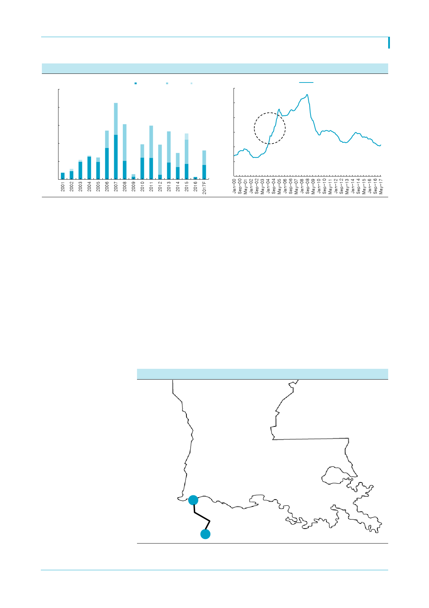

[그림 3] 삼성중공업 신규수주
(십억달러)
25
20
15
10
5
0
자료: 삼성중공업, 한국투자증권
삼성중공업(010140)
Shipbuilding Offshore Other
[그림 4] Clarkson 신조선가 추이
(index)
200
180
160
140
120
100
80
Clarkson Newbuilding Index
자료: Clarkson, 한국투자증권
Coral에 이어 미국 Delfin FLNG 프로젝트 진행
FLNG 시장의 회복 시그널이 뚜렷하다. Coral FLNG 계약에 이어 지난 1일 미국 Delfin
FLNG는 미국 에너지부로부터 수출 승인을 취득했다. 이제 Delfin은 미 FERC의 건설과
운영 허가 취득절차를 진행하게 된다. Delfin은 미국 내 최초의 FLNG 유형으로 총 1,300
만톤의 초대형 수출 프로젝트다. 4건의 FLNG 건조와 LNG선 발주를 계획하고 있다.
2021년 운영 개시 계획을 맞추려면 최소 2018년에는 FLNG 건조 계약이 진행돼야 한다.
삼성중공업은 FLNG 시장에서 독보적 위치를 점하고 있다. 2011년 Shell과 장기독점계약
을 맺고 최초의 FLNG인 연 360만톤 규모 ‘Prelude FLNG’ 건조에 들어갔다. Coral
FLNG는 330만톤 규모로 초대형 FLNG로는 전세계 두번째 프로젝트이며 중소형 FLNG
를 포함하면 네번째 프로젝트다. 삼성중공업은 2013년 페트로나스로부터 ‘PFLNG DUA’
호를, 대우조선해양은 ‘PFLNG SATU’호를 수주했으나 7억달러의 중소 규모다. Prelude
FLNG는 올 2분기 인도 예정이며 인도 후에는 유일한 초대형 FLNG 건조 실적을 갖게 된
다는 점에서 향후 상승기에 진입할 FLNG 시장에서 유리한 위치를 선점할 것이다.
[그림 5] 미국 Delfin FLNG 프로젝트
Texas
Louisiana
Brow nfield 개발,
FLNG 총 용량
1,300만톤
Cameron Parish
자료: Delfin LNG, 한국투자증권
Port Delfin
3